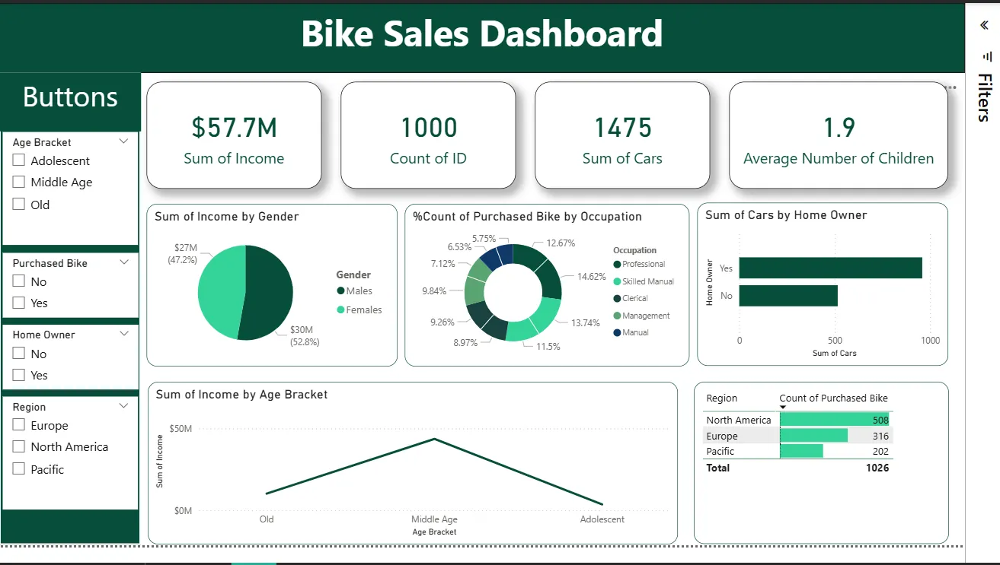
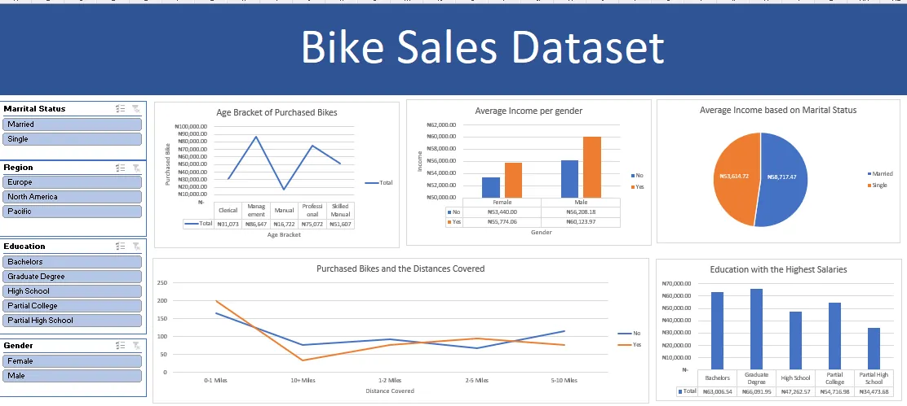

Bike sales analysis
Who buys bikes and who doesn't: purchase behaviour by age, income, commute distance, region and marital status.

The challenge
The Europe bike sales data had 18 columns but gave decision-makers little visibility into which regions sell best, how customer groups behave, or whether things like children or commute distance influence a purchase.
My approach
I cleaned and prepared the data in Excel and Power Query, answered a fixed set of business questions with pivot analysis, then built an interactive Power BI dashboard so the answers could be explored.
Process
- Kept an untouched copy of the raw table, then cleaned a duplicate in Power Query.
- Removed duplicates, checked missing values and standardised inconsistent entries.
- Analysed purchase rate by age, gender, income, marital status, commute distance and region.
- Built a Power BI dashboard with KPI cards, charts and filters.
What I found
- More customers did not buy a bike than did, so conversion is the main opportunity.
- Middle-aged customers were the most likely to buy.
- Higher-income customers bought more often.
- Customers with shorter commutes bought more often than those travelling further.
- Married customers were slightly more likely to buy than single customers; the gender gap was small.
- Purchases varied noticeably by region.
Recommendations
- Focus marketing on middle-aged, higher-income customers with short commutes.
- Sell bikes on convenience, cost savings and health for short commutes.
- Invest more in strong regions and investigate why weaker ones lag.
- Offer instalments and entry-level models to reach lower-income customers.
